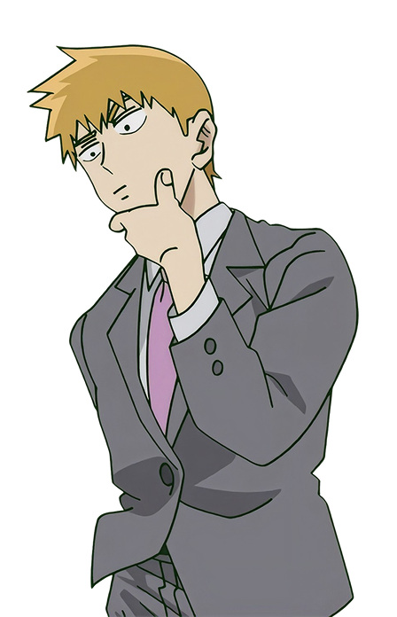

EXAME DE APTIDÃO PARANORMAL
Antes de assumir suas responsabilidades como membro da Psycho Association, você precisa demonstrar que possui os conhecimentos necessários para lidar com ocorrências paranormais.
20
Questões
100
Pontos máximos
5 - 10 min
Duração estimada
Múltipla escolha
Formato

Questão atual: de
questões.
QUANTIDADE DE ACERTOS:
QUANTIDADE DE ERROS:
Pontuação Final:
***
***